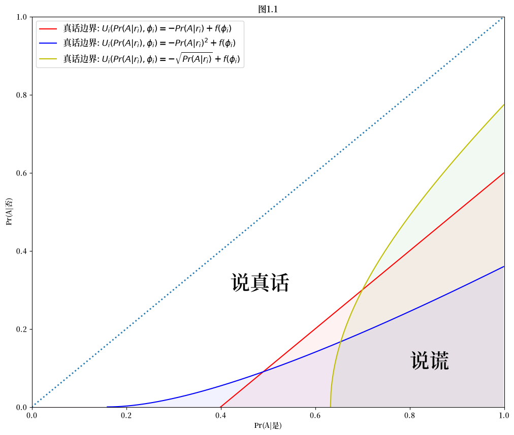
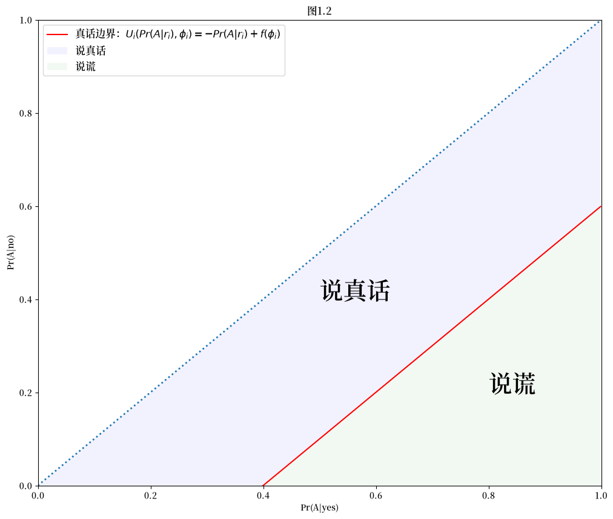
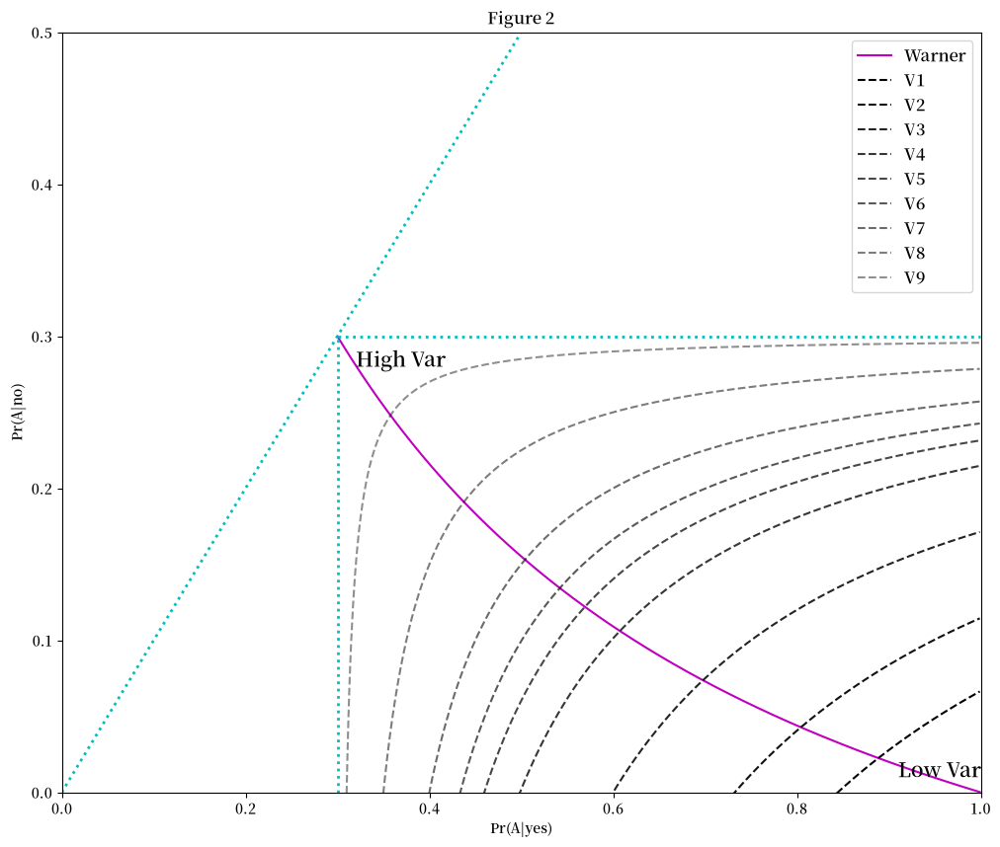
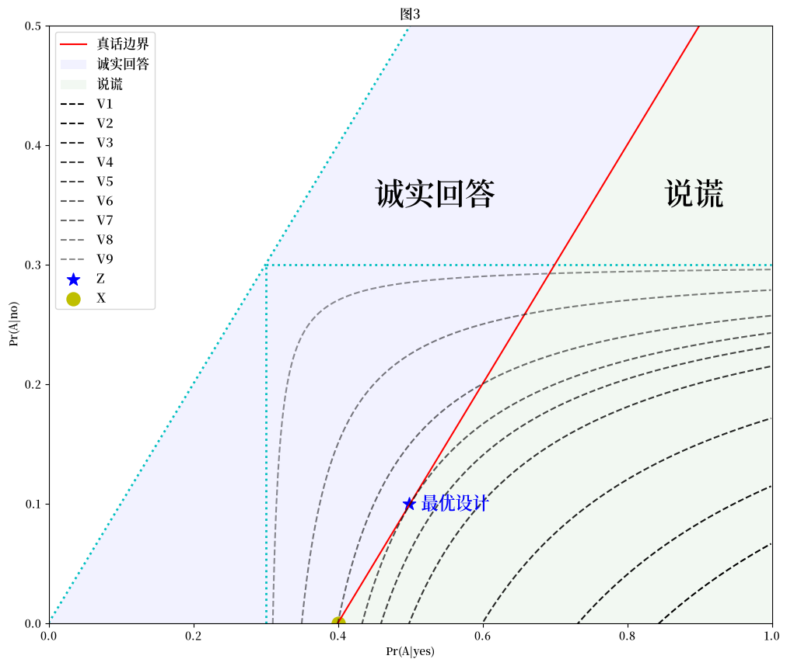
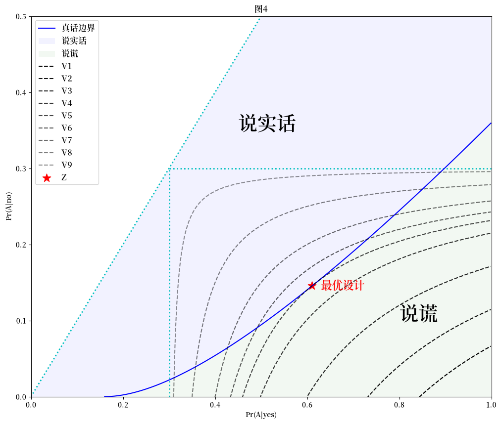

import matplotlib.pyplot as plt
import matplotlib as mpl
FONTPATH = "fonts/SourceHanSerifSC-SemiBold.otf"
mpl.font_manager.fontManager.addfont(FONTPATH)
plt.rcParams['font.family'] = ['Source Han Serif SC']
import numpy as np
17. 随机回答的期望效用#
17.1. 概述#
这篇讲座 描述了传统的 Warner [Warner, 1965] 随机回答调查，这种调查旨在保护受访者的隐私。
Lars Ljungqvist [Ljungqvist, 1993] 分析了受访者是否如实回答如何取决于期望效用。
本讲座讲述了 Ljungqvist 如何使用他的框架来阐明其他研究者提出的替代性随机回答调查技术，例如 [Lanke, 1975]、 [Lanke, 1976]、 [Leysieffer and Warner, 1976]、 [Anderson, 1976]、 [Fligner et al., 1977]、 [Greenberg et al., 1977]、 [Greenberg et al., 1969]。
17.2. 隐私度量#
我们考虑只有”是”和”否”两种可能答案的随机回答模型。
该设计决定了以下概率:
这些设计概率反过来可以用来计算给定回答 \(r\) 时属于敏感群体 \(A\) 的条件概率:
17.3. 概念集合#
在这里我们描述一些研究者提出的概念
17.3.1. Leysieffer and Warner(1976)#
如果回答 \(r\) 相对于 \(A\) 或 \(A^{'}\) 满足以下条件，则被视为具有危害性：
根据贝叶斯法则：
如果这个表达式大于（小于）\(1\)，则表明 \(r\) 相对于 \(A\) (\(A^{'}\))具有危害性。因此，危害性的自然度量将是：
不失一般性地假设 \(\text{Pr}(\text{yes}|A)>\text{Pr}(\text{yes}|A^{'})\)，则”是”（“否”）的回答相对于\(A\) (\(A^{'}\))具有危害性，即：
Leysieffer和Warner证明，估计的方差只能通过增加这两个危害性度量中的一个或两个来降低。
因此，一个有效的随机回应模型应在保证受访者配合的前提下，达到所能承受的最大风险水平。
作为一个特例，Leysieffer和Warner考虑了一个”否”的回答不具有危害性的问题；也就是说，\(g(\text{no}|A^{'})\)可以是无限大的。
显然，最优设计必须满足
这意味着
17.3.2. Lanke(1976)#
Lanke (1975) [Lanke, 1975] 认为”人们可能想要隐藏的是属于A组的身份，而不是属于补集A’组的身份。”
因此，Lanke (1976) [Lanke, 1976] 认为一个合适的保护度量是最小化
在保持这个度量不变的情况下，他解释了在什么条件下，使用无关问题模型或Warner (1965)的原始模型可以获得最小方差估计。
17.3.3. 2.3 Fligner, Policello, and Singh#
Fligner, Policello, and Singh得出了与Lanke (1976)类似的结论。[Fligner et al., 1977]
他们将”隐私保护”度量为
17.3.4. 2.4 Greenberg, Kuebler, Abernathy, and Horvitz (1977)#
Greenberg, Kuebler, Abernathy, and Horvitz (1977) 强调，不仅要考虑 \(A\) 组成员的风险，还要考虑不属于该敏感群体的个体的风险。他们定义在 \(A\) 组个体身上的风险为这一个体被认为属于A组的概率：
类似地，对于不属于\(A\)的个体，其风险为
Greenberg等人(1977)还考虑了另一个相关的风险度量，“这可能更接近受访者实际感受到的担忧。”
对于在 \(A\) 和 \(A^{'}\) 中的个体，其”有限风险”分别为
和
这个度量仅仅是(17.7)中的第一项，即个体回答”是”且被认为属于\(A\)的概率。
17.4. 受访者的期望效用#
17.4.1. 真实边界#
用于估计属于 \(A\) 的人群比例的随机回答技术的关键假设是:
假设1: 受访者对被认为属于\(A\)感到不适。
假设2: 只要代价不太高，受访者更倾向于如实回答问题而不是撒谎。这里的代价指的是假设1中的不适感。
让 \(r_i\) 表示个体 \(i\) 对随机问题的回答。
\(r_i\) 只能取值”是”或”否”。
对于给定的随机回答访谈设计和关于属于集合 \(A\) 的人口比例的某个信念，受访者的回答与该个体属于 \(A\) 的条件概率 \(\text{Pr}(A|r_i)\) 相关联。
在给定 \(r_i\) 和完全隐私的情况下，如果 \(r_i\) 代表真实答案而不是谎言，个体的效用会更高。
就受访者的期望效用作为 \(\text{Pr}(A|r_i)\) 和 \(r_i\) 的函数而言：
\(\text{Pr}(A|r_i)\) 越高，个体 \(i\) 的期望效用越低。
如果 \(r_i\) 代表真实答案而不是谎言，期望效用会更高。
定义：
\(\phi_i \in \left\{\text{truth},\text{lie}\right\}\)，一个二分变量，表示 \(r_i\) 是否为真实陈述。
\(U_i\left(\text{Pr}(A|r_i),\phi_i\right)\)，一个对其第一个参数可微的效用函数，概括了个体 \(i\) 的期望效用。
则存在一个 \(r_i\) 使得
且
现在假设个体\(i\)的真实答案是”是”。
如果满足以下条件，个体 \(i\) 会选择如实回答：
如果真实答案是”否”，个体 \(i\) 只有在以下情况下才会提供真实答案：
假设
因此”是”的答案增加了个体属于 \(A\) 的概率。
约束(17.14)必定成立。
因此，约束(17.13)成为个体 \(i\) 始终如实回答的唯一必要条件。
在等式情况下，约束 \((10.\text{a})\) 确定了当真实答案为”是”时，使个体在说真话和说谎之间无差异的条件概率：
方程(17.15)定义了一个”真实边界”。
对(17.15)中的条件概率求导表明，在条件概率空间中，真实边界具有正斜率：
正相关关系的来源是：
17.4.2. 绘制真话边界#
我们可以推导出关于真话边界的两个结论：
真话边界将条件概率空间分为两个子集：“说真话”和”说谎”。因此，充分的隐私会引出真实答案，而不充分的隐私则会导致谎言。真话边界取决于受访者的效用函数。
我们可以用以下Python代码绘制一些真话边界：
x1 = np.arange(0, 1, 0.001)
y1 = x1 - 0.4
x2 = np.arange(0.4**2, 1, 0.001)
y2 = (pow(x2, 0.5) - 0.4)**2
x3 = np.arange(0.4**0.5, 1, 0.001)
y3 = pow(x3**2 - 0.4, 0.5)
plt.figure(figsize=(12, 10))
plt.plot(x1, y1, 'r-', label=r'真话边界: $U_i(Pr(A|r_i),\phi_i)=-Pr(A|r_i)+f(\phi_i)$')
plt.fill_between(x1, 0, y1, facecolor='red', alpha=0.05)
plt.plot(x2, y2, 'b-', label=r'真话边界: $U_i(Pr(A|r_i),\phi_i)=-Pr(A|r_i)^{2}+f(\phi_i)$')
plt.fill_between(x2, 0, y2, facecolor='blue', alpha=0.05)
plt.plot(x3, y3, 'y-', label=r'真话边界: $U_i(Pr(A|r_i),\phi_i)=-\sqrt{Pr(A|r_i)}+f(\phi_i)$')
plt.fill_between(x3, 0, y3, facecolor='green', alpha=0.05)
plt.plot(x1, x1, ':', linewidth=2)
plt.xlim([0, 1])
plt.ylim([0, 1])
plt.xlabel('Pr(A|是)')
plt.ylabel('Pr(A|否)')
plt.text(0.42, 0.3, "说真话", fontdict={'size':28, 'style':'italic'})
plt.text(0.8, 0.1, "说谎", fontdict={'size':28, 'style':'italic'})
plt.legend(loc=0, fontsize='large')
plt.title('图1.1')
plt.show()
findfont: Failed to find font weight normal, now using 600.
findfont: Failed to find font weight normal, now using 600.
findfont: Failed to find font weight normal, now using 600.
findfont: Failed to find font weight normal, now using 600.

图1.1 三种真实边界类型。
在不失一般性的情况下，我们考虑真实边界：
并在图1.2中绘制个体 \(i\) 的”说真话”和”说谎区域”：
x1 = np.arange(0, 1, 0.001)
y1 = x1 - 0.4
z1 = x1
z2 = 0
plt.figure(figsize=(12, 10))
plt.plot(x1, y1,'r-',label='真话边界：$U_i(Pr(A|r_i),\phi_i)=-Pr(A|r_i)+f(\phi_i)$')
plt.plot(x1, x1, ':', linewidth=2)
plt.fill_between(x1, y1, z1, facecolor='blue', alpha=0.05, label='说真话')
plt.fill_between(x1, z2, y1, facecolor='green', alpha=0.05, label='说谎')
plt.xlim([0, 1])
plt.ylim([0, 1])
plt.xlabel('Pr(A|yes)')
plt.ylabel('Pr(A|no)')
plt.text(0.5, 0.4, "说真话", fontdict={'size':28, 'style':'italic'})
plt.text(0.8, 0.2, "说谎", fontdict={'size':28, 'style':'italic'})
plt.legend(loc=0, fontsize='large')
plt.title('图1.2')
plt.show()

17.5. 调查设计的功利主义观点#
17.5.1. 等方差曲线#
统计学家的目标是
找到一个随机回答调查设计，使估计量的偏差和方差最小化。
在一个确保所有受访者都会诚实回答的设计中，Anderson(1976, 定理1) [Anderson, 1976] 证明了在两种回答模型中最小方差估计的方差为
其中有放回随机样本包含 \(n\) 个个体。
我们可以使用表达式 (17.17) 来绘制等方差曲线。
以下不等式限制了等方差曲线的形状：
从表达式 (17.17)、(17.18) 和 (17.19) 我们可以看出：
方差只能通过增加 \(\text{Pr}(A|\text{yes})\) 和/或 \(\text{Pr}(A|\text{no})\) 与 \(r_A\) 的距离来减小。
等方差曲线始终向上倾斜且呈凹形。
17.5.2. 绘制等方差曲线#
我们使用Python代码来绘制等方差曲线。
这些条件概率对可以使用Warner (1965)的模型获得。
注意：
只要统计学家能完全控制模型设计，等方差曲线上的任何点都可以通过无关问题模型达到。
Warner (1965)的原始随机化回应模型比无关问题模型灵活性较低。
class Iso_Variance:
def __init__(self, pi, n):
self.pi = pi
self.n = n
def plotting_iso_variance_curve(self):
pi = self.pi
n = self.n
nv = np.array([0.27, 0.34, 0.49, 0.74, 0.92, 1.1, 1.47, 2.94, 14.7])
x = np.arange(0, 1, 0.001)
x0 = np.arange(pi, 1, 0.001)
x2 = np.arange(0, pi, 0.001)
y1 = [pi for i in x0]
y2 = [pi for i in x2]
y0 = 1 / (1 + (x0 * (1 - pi)**2) / ((1 - x0) * pi**2))
plt.figure(figsize=(12, 10))
plt.plot(x0, y0, 'm-', label='Warner')
plt.plot(x, x, 'c:', linewidth=2)
plt.plot(x0, y1,'c:', linewidth=2)
plt.plot(y2, x2, 'c:', linewidth=2)
for i in range(len(nv)):
y = pi - (pi**2 * (1 - pi)**2) / (n * (nv[i] / n) * (x0 - pi + 1e-8))
plt.plot(x0, y, 'k--', alpha=1 - 0.07 * i, label=f'V{i+1}')
plt.xlim([0, 1])
plt.ylim([0, 0.5])
plt.xlabel('Pr(A|yes)')
plt.ylabel('Pr(A|no)')
plt.legend(loc=0, fontsize='large')
plt.text(0.32, 0.28, "High Var", fontdict={'size':15, 'style':'italic'})
plt.text(0.91, 0.01, "Low Var", fontdict={'size':15, 'style':'italic'})
plt.title('Figure 2')
plt.show()
等方差曲线的特性是：
同一条等方差曲线上的所有点具有相同的方差
从 \(V_1\) 到 \(V_9\)，等方差曲线的方差单调增加，颜色也单调变亮
假设等方差模型的参数遵循Ljungqvist [Ljungqvist, 1993]中的设定，即：
\(\pi=0.3\)
\(n=100\)
那么我们可以在图2中绘制等方差曲线：
var = Iso_Variance(pi=0.3, n=100)
var.plotting_iso_variance_curve()
findfont: Failed to find font weight normal, now using 600.

17.5.3. 最优调查设计#
在等方差曲线上的一点可以通过无关问题设计来实现。
我们现在专注于寻找”最优调查设计”，它需要：
在满足隐私限制的前提下，最小化估计量的方差。
为了获得最优设计，我们首先将所有个体的诚实边界叠加到等方差图上。
构建最优设计需要：
统计学家应该找到所有诚实边界线以上区域的交集；即确保所有受访者诚实回答的条件概率集合。
该集合与最低可能的等方差曲线的切点确定了最优调查设计。
因此，最小方差无偏估计量是由最不愿意提供诚实答案的个体所决定的。
关于模型设计的一些说明：
个体是否诚实回答的决定取决于他或她对其他受访者行为的预期，因为这决定了个体对\(\text{ Pr}(A|\text{yes})\)和\(\text{ Pr}(A|\text{no})\)的计算。
最优设计模型的均衡是非合作博弈的纳什均衡。
假设(17.12)足以保证最优模型设计的存在。通过选择足够接近的\(\text{ Pr}(A|\text{yes})\)和\(\text{ Pr}(A|\text{no})\)，所有受访者都会发现如实回答是最优选择。这些概率越接近，估计量的方差就越大。
如果受访者从说实话中获得的预期效用增加足够大，那么就不需要使用随机化回答模型。在\(\text{ Pr}(A|\text{yes})=1\)和\(\text{ Pr}(A|\text{no})=0\)， 即当受访者对直接提问如实回答时，可以获得最小可能的估计方差。
一个更普遍的设计问题是最小化估计量的方差和偏差的某种加权和。接受一些最”不情愿”的受访者的谎言可能是最优的。
17.6. 对提议隐私措施的批评#
我们可以用功利主义方法来分析一些隐私措施。
我们将使用Python代码来帮助我们。
17.6.1. 对Lanke (1976)方法的分析#
Lanke (1976)建议一个隐私保护标准，即最小化：
按照Lanke的建议，统计学家应该在保持 \(\text{ Pr}(A|\text{no})\) 固定为0的情况下，寻找与诚实回答相一致的最大可能的 \(\text{ Pr}(A|\text{yes})\) 值。在图3中，方差在点 \(X\) 处达到最小。
然而，我们可以看到在图3中，点 \(Z\) 提供了一个更小的方差，它仍然能够保证受访者的配合，而且根据我们在第三部分对真实边界的讨论，这是可以实现的：
pi = 0.3
n = 100
nv = [0.27, 0.34, 0.49, 0.74, 0.92, 1.1, 1.47, 2.94, 14.7]
x = np.arange(0, 1, 0.001)
y = x - 0.4
z = x
x0 = np.arange(pi, 1, 0.001)
x2 = np.arange(0, pi, 0.001)
y1 = [pi for i in x0]
y2 = [pi for i in x2]
plt.figure(figsize=(12, 10))
plt.plot(x, x, 'c:', linewidth=2)
plt.plot(x0, y1, 'c:', linewidth=2)
plt.plot(y2, x2, 'c:', linewidth=2)
plt.plot(x, y, 'r-', label='真话边界')
plt.fill_between(x, y, z, facecolor='blue', alpha=0.05, label='诚实回答')
plt.fill_between(x, 0, y, facecolor='green', alpha=0.05, label='说谎')
for i in range(len(nv)):
y = pi - (pi**2 * (1 - pi)**2) / (n * (nv[i] / n) * (x0 - pi + 1e-8))
plt.plot(x0, y, 'k--', alpha=1 - 0.07 * i, label=f'V{i+1}')
plt.scatter(0.498, 0.1, c='b', marker='*', label='Z', s=150)
plt.scatter(0.4, 0, c='y', label='X', s=150)
plt.xlim([0, 1])
plt.ylim([0, 0.5])
plt.xlabel('Pr(A|yes)')
plt.ylabel('Pr(A|no)')
plt.text(0.45, 0.35, "诚实回答", fontdict={'size':28, 'style':'italic'})
plt.text(0.85, 0.35, "说谎",fontdict = {'size':28, 'style':'italic'})
plt.text(0.515, 0.095, "最优设计", fontdict={'size':16,'color':'b'})
plt.legend(loc=0, fontsize='large')
plt.title('图3')
plt.show()
findfont: Failed to find font weight normal, now using 600.

17.6.2. Leysieffer and Warner (1976)的方法#
Leysieffer and Warner (1976)建议使用二维风险度量，当”否”答案不存在风险时，该度量可简化为一维，这意味着
和
从功利主义的角度来看，这不是最优选择。
17.6.3. 对Chaudhuri and Mukerjee’s (1988)方法的分析#
[Chaudhuri and Mukerjee, 1988]
Chaudhuri and Mukerjee (1988)认为，由于”是”有时可能与敏感群体 \(A\) 相关，聪明的受访者可能会倾向于总是安全但虚假地回答”否”。在这种情况下，真实边界使得个体在真实答案为”是”时选择说谎，且
在这里，说谎带来的收益太高，以至于没有人愿意回答”是”。
这意味着
在任何情况下都成立。
因此，不存在可实现的模型设计。
然而，从功利主义的角度来看，应该存在其他与真实答案相一致的调查设计。
特别是，如果消除了说谎带来的相对优势，受访者将选择如实回答。
我们可以用Python来展示最优模型设计对应图4中的点Q：
def f(x):
if x < 0.16:
return 0
else:
return (pow(x, 0.5) - 0.4)**2
pi = 0.3
n = 100
nv = [0.27, 0.34, 0.49, 0.74, 0.92, 1.1, 1.47, 2.94, 14.7]
x = np.arange(0, 1, 0.001)
y = [f(i) for i in x]
z = x
x0 = np.arange(pi, 1, 0.001)
x2 = np.arange(0, pi, 0.001)
y1 = [pi for i in x0]
y2 = [pi for i in x2]
x3 = np.arange(0.16, 1, 0.001)
y3 = (pow(x3, 0.5) - 0.4)**2
plt.figure(figsize=(12, 10))
plt.plot(x, x, 'c:', linewidth=2)
plt.plot(x0, y1,'c:', linewidth=2)
plt.plot(y2, x2,'c:', linewidth=2)
plt.plot(x3, y3,'b-', label='真话边界')
plt.fill_between(x, y, z, facecolor='blue', alpha=0.05, label='说实话')
plt.fill_between(x3, 0, y3,facecolor='green', alpha=0.05, label='说谎')
for i in range(len(nv)):
y = pi - (pi**2 * (1 - pi)**2) / (n * (nv[i] / n) * (x0 - pi + 1e-8))
plt.plot(x0, y, 'k--', alpha=1 - 0.07 * i, label=f'V{i+1}')
plt.scatter(0.61, 0.146, c='r', marker='*', label='Z', s=150)
plt.xlim([0, 1])
plt.ylim([0, 0.5])
plt.xlabel('Pr(A|yes)')
plt.ylabel('Pr(A|no)')
plt.text(0.45, 0.35, "说实话", fontdict={'size':28, 'style':'italic'})
plt.text(0.8, 0.1, "说谎", fontdict={'size':28, 'style':'italic'})
plt.text(0.63, 0.141, "最优设计", fontdict={'size':16,'color':'r'})
plt.legend(loc=0, fontsize='large')
plt.title('图4')
plt.show()

17.6.4. Greenberg et al. (1977)的方法#
Greenberg et al. (1977)将属于群体\(A\)的个体的风险定义为他/她被认为属于\(A\)的概率:
不属于群体\(A\)的个体的风险是:
他们还考虑了另一个相关的风险度量，他们认为这个度量”可能更接近受访者实际感受到的担忧。”
对于属于\(A\)和\(A^{'}\)的个体，他们的”有限风险”分别是:
和
根据Greenberg et al. (1977)的说法，受访者在随机选择要回答的问题之前，就已经承诺根据(17.21)或(17.23)中的概率如实回答。
假设适当的隐私度量由(17.23)和(17.24)中的”有限风险”概念来表示。
考虑一个无关问题模型，其中无关问题被替换为指令”说’不’”，这意味着
由此可得：
\(A^{'}\)中个体的风险为0。
通过选择足够小的 \(\text{Pr}(\text{yes}|A)\)，\(A\) 中个体的风险也可以任意小。
尽管这个风险可以被设定为接近0，但 \(A\) 中的个体在如实回答敏感问题时会完全暴露其身份。
然而，在功利主义框架下，这显然是矛盾的。
如果个体愿意主动提供这些信息，那么随机回答设计似乎从一开始就是不必要的。
这忽略了一个事实，即受访者在看到需要回答的问题之前，仍然保留说谎的选择。
17.7. 总结说明#
随机回答程序的合理性在于：
认为受访者会因被视为属于敏感群体而感到不适。
除非过于暴露，受访者更倾向于如实回答问题而不是说谎。
如果隐私度量与受访者的理性行为不完全一致，那么所有为得出最优模型设计所做的努力都将是徒劳的。
功利主义方法在假设受访者会最大化其预期效用的前提下，为模拟受访者行为提供了一个系统的方法。
在功利主义分析中：
真实边界将感知属于敏感群体的条件概率空间 \(\text{Pr}(A|\text{yes})\) 和 \(\text{Pr}(A|\text{no})\) 划分为说真话区域和说谎区域。
最优模型设计是在真实边界接触到最低可能的等方差曲线的点上获得的。
Ljungqvist [Ljungqvist, 1993]分析的一个实际含义是，可以通过**选择足够接近的 \(\text{Pr}(A|\text{yes})\) 和 \(\text{Pr}(A|\text{no})\)**来承认对受访者隐私需求的不确定性。